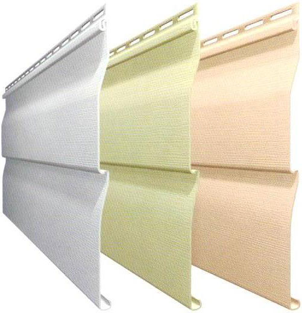
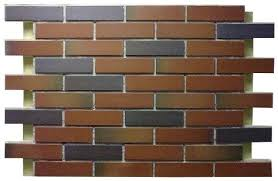

Сайдинг

На фото — виниловый сайдинг
Рейтинг отделочных материалов был бы не полон без упоминания сайдинга. Сайдинговыне панели могут быть изготовлены из винила, стали, древесины и даже цемента.
Сайдинг пригоден для отделки любых стеновых поверхностей. Ведь сначала обустраивается специальная обрешетка, непосредственно на которую осуществляется монтаж. Применение обрешетки оборачивается дополнительным преимуществом. Ведь между стеной и сайдингом можно разместить сложную конструкцию из теплоизоляционных и пароизоляционных материалов.
Стеновые панели

Стеновая панель под кирпич
Стеновые панели — еще одна разновидность декоративных отделочных материалов, нашедших широкое применение при возведении и обустройстве малоэтажных строительных объектов. Стеновые панели изготавливаются с применением полипропилена, стеклопластика и прочих надежных, долговечных и недорогих материалов.
Панели выполняют две функции. Прежде всего, они украшают экстерьер здания, так как имитируют такие отделочные материалы как кирпич, камень, дерево и т.д. Кроме того, стеновые панели выполняют защитную функцию, так как снижают степень теплопроводности внешних стен.